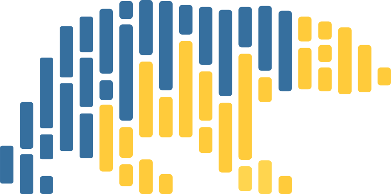

Blog Posts 2024 Github Actions Aprender conceptos básicos de Github Actions y Github Pages. Github Repository Comprender los pasos necesarios para mostrar tus repositorios en Github. Github Profile Comprender los pasos necesarios para crear un perfil de GitHub de alta calidad. 2023 Documentación Enteneder los pasos para crear una buena documentación en Python (más algunas recomendaciones). Gitlab PDF ¿Cómo aprovechar GitLab CI/CD para generar archivos PDF utilizando los artefactos de un Pipeline? 2022 Test Driven Development Cómo abordar el desarrollo de software para Data Science usando Test Driven Development. Polars Polars es una librería de DataFrames increíblemente rápida y eficiente implementada en Rust. 2021 Impact on Digital Learning Competition Solution: LearnPlatform COVID-19 Impact on Digital Learning proposed by Kaggle. Buenas Prácticas Consejos que te ayudarán a mejorar tus skills en el desarrollo de software (con Python). RISE RISE es una extensión a los Jupyter Notebooks que permite transformar tus notebooks en presentaciones interactivas. Jupyter Noteboook Jupyter Notebook, es un entorno de trabajo interactivo que permite desarrollar código en Python.